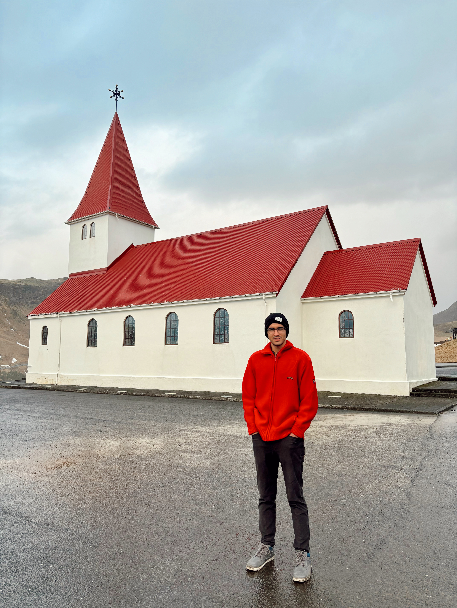
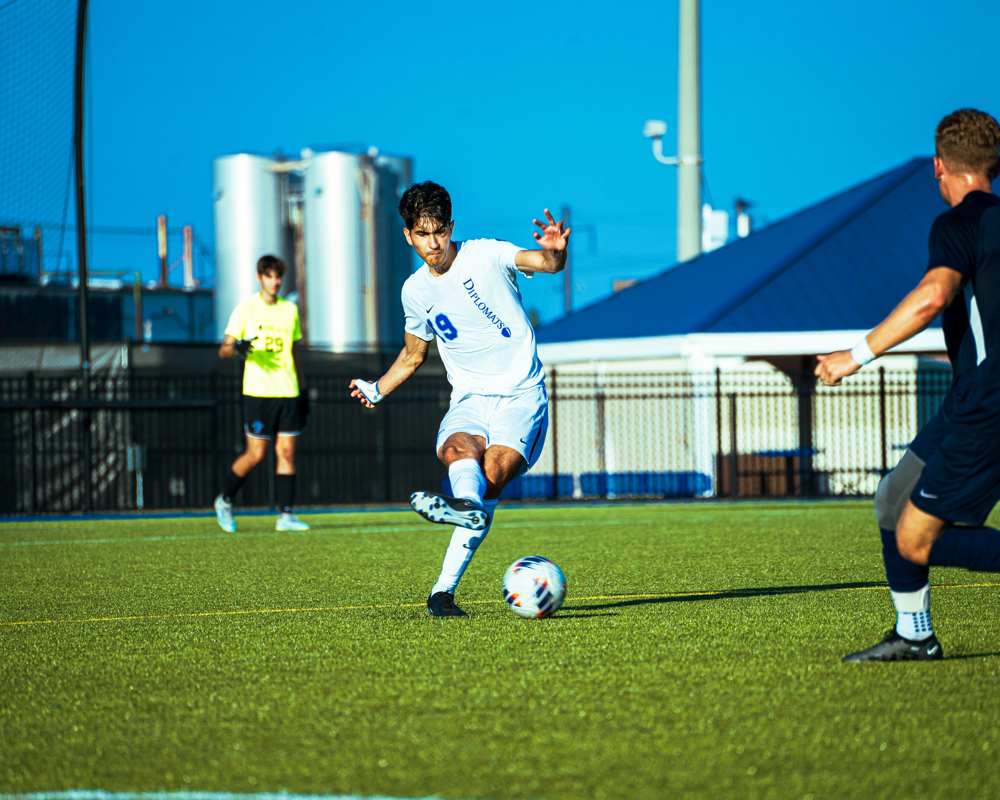
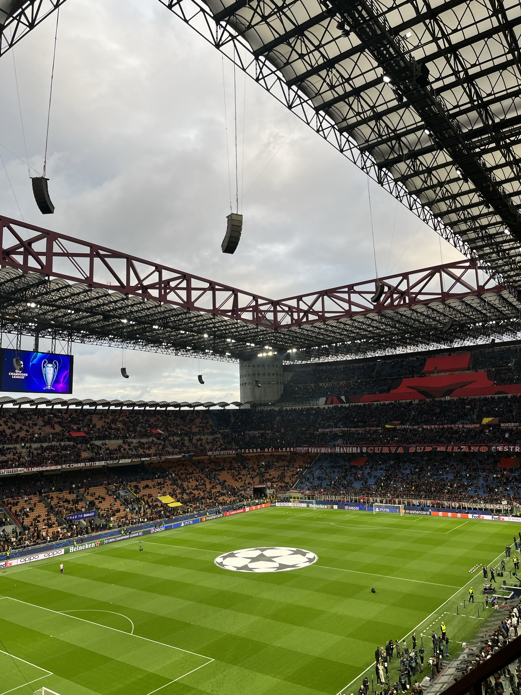
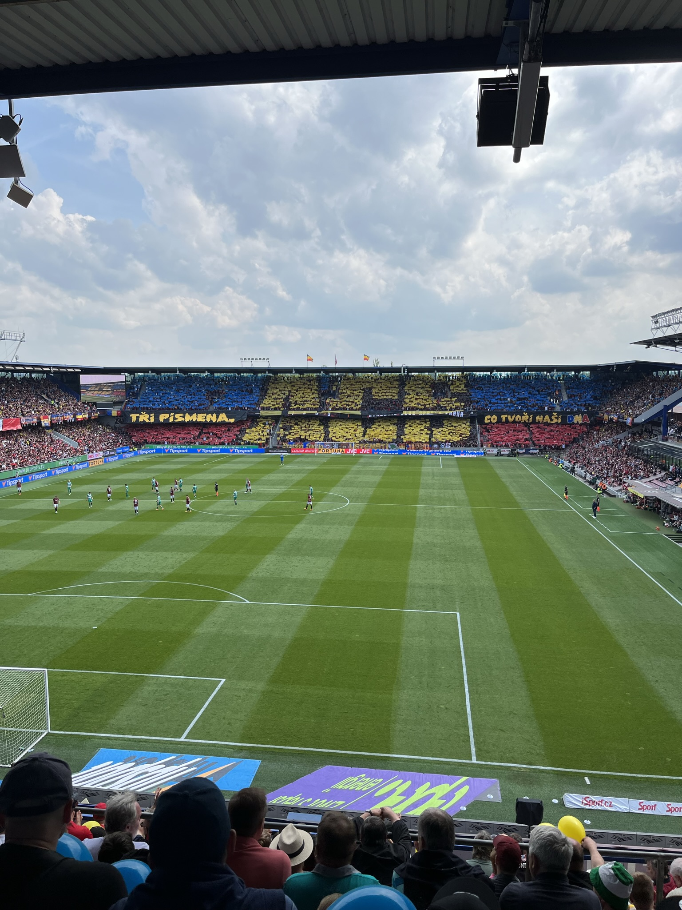
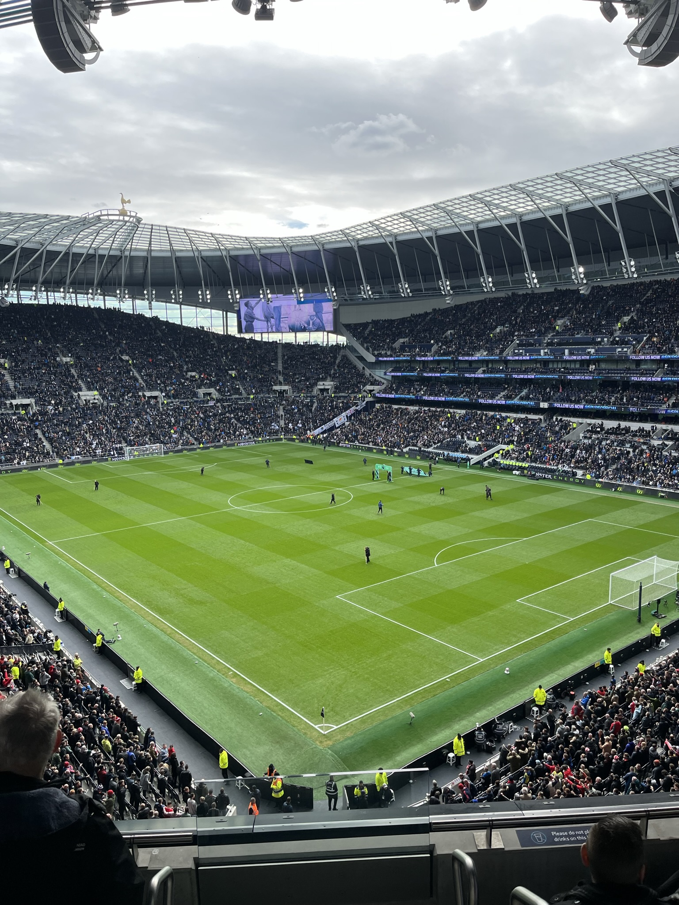
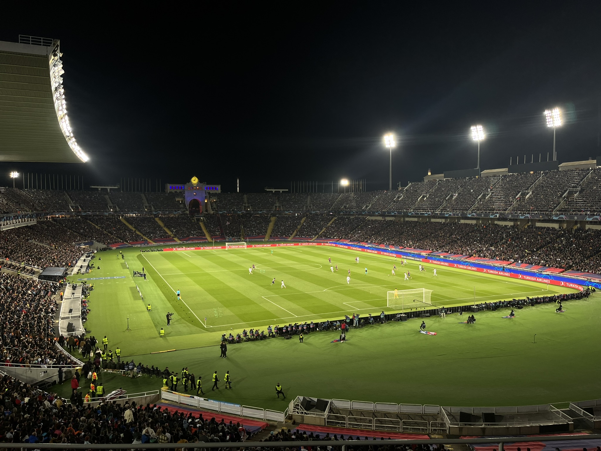
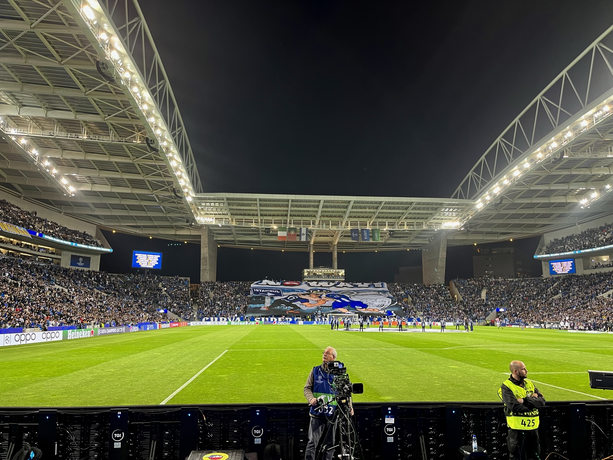

About
Who I am
A short summary about my work, my interests, and the things that keep me curious.

I am a robotics graduate student focusing on learning systems that combine deep learning and computer vision for real‑world action. Most of what’s showcased on this site comes from coursework completed at UPenn, where I’ve explored different architectures, training strategies, and how they can be used in both robotics and other domains. Fundamentally, the past two years has consistently revolved around one core idea: when confronted with a real‑world problem and a data set, how can we harness deep‑learning techniques to devise an effective solution?

Interests
My interests span three closely connected areas. First, I am deeply interested in applying deep learning and computer vision to robotics, particularly in understanding how learned representations can be leveraged for perception, decision-making, and control in real-world systems. Second, I enjoy extending these same methods beyond traditional robotics settings into domains such as sports analytics, fashion, and music. I am drawn to these fields not only because they pose rich and underexplored technical challenges, but because designing creative architectures and representations for such problems is inherently rewarding. Finally, I have developed a growing focus on deep reinforcement learning and its role in unifying perception and action across domains. I believe reinforcement learning will play a central role in the future of intelligent systems, offering a principled framework for extracting structure, intent, and long-horizon behavior from complex environments.
Beyond research

Soccer has been the lens through which I have learned many of the most important lessons in my life. The successes and failures inherent to the sport have shaped how I approach challenges, make decisions under pressure, and collaborate within a team. My experience playing for and captaining the Franklin and Marshall men’s varsity soccer team is something I carry with both pride and humility. It was through this role that I developed resilience, accountability, and a deep respect for collective effort, and it continues to influence how I lead and work with others today.
Gallery
Some stadiums that I have had the fortune of visiting:




